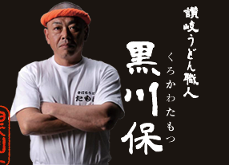

About Tamoya

Tamotsu Kurokawa, Tamoya Founder
Six years after he had started a udon stand, he opened his first udon restaunrant Tamoya. As he was pushing on tword making udon, he had a chance to participate in TV Champion, a reality udon comeptition TV show, as the representative and champion of Sanuki Udon. The TV program made people in Tokyo know about Tamoya's udon, remarking "Sanuki Udon has the great chewy texture and is really delicious ". That experience had him think to spread his Tamoya udon all over the country and start the franchise business. He belives that fascinating customers, and the gratitude for cutomers, and smile are invaluable for their success. Through many failures, his and staffs' passion has taken their restaurants to have long lines. Furthermore, They appreiciate the past, beleive in the present, expect the future.
About Tamoya
The heart and soul of the Sanuki Udon is the chewy texture of its noodle. A pride in the noodle that will not budge. Noodles that through many trials and tribulations, our udon champion will handmake to perfection
This Udon that won "TV Champion Best Udonmaker of Kagawa Prefecture" exclusively uses flours and salts. In addition, blending 3 types of flour, and changing their blending ratios by season, the Udon maker will alter the amount of salt and boiling time based on the temperature and humidity of that day.
The dough, which is made to perfection, is then, under sanuki udon tradition, stepped on for many hours to give birth to the strength that is unique to these noodles. A master noodle maker is able to differentiate the amount of pressure and number of steps depending the type of dough. At Tamoya, an apprentice must be at least two years into his training in order to even take steps on the dough. The maker must use all his five senses, and therefore required to be in peak condition everyday in order to fulfill his duty.
A taste that does not take a step back to the best restaurants in the world. One sip will have you nodding at "the golden white broth"
The broth is made from boiling and taking the first layer of dried sardines, and dried bonito fished in Ibuki. For each sardine, the head and intestines are neatly taken out. This tenuous step usually done for high-end restaurants is unthinkable for a Udon Shop. Although it uses much time and labor, it is crucial to making the broth taste the best. This unwavering stubbornness contributes to the completion of the pure "golden broth."
In many places, we provide love towards the customers. Free toppings is one of many expressions
Toppings such as green onions, wakame seaweed, ginger, grated daikon radish, and lime are all free and all you can take. Complying to orders of freshly fried tempura is a gesture that all customers are just like family. All staff and noodlemakers unite to provide happiness and love to the customers.
A gift you can feel confident in giving to others. This is an ideal that Tamoya wishes to fulfill as the prime provider of Sanuki Udon.
We want everybody to taste what they had at the store in their homes. Priding ourselves in those ideals, we have many repeaters and our reputation has spread by word of mouth. From raw Udon to Frozen Udon, Curry udon to Original Udons, all types of cravings are fulfilled. A fabulous gift that anybody wants to recommended.


Contact
- Our Location
-
177 River Valley Road #01-00 Liagn Court Shopping Center
Singapore 179030 - Contact Number
- +65 9750 9494
- Opening Hours
-
Mondays to Saturdays
11:00 - 22:00
operating company: Japan food culture